První přednáška současného plánu odkazuje na tento podklad. Historické hodnocení, sylabus a příklady nejsou nové organizační pokyny.
Původní snímek · 1
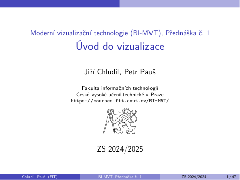
Jiří Chludil, Petr Pauš · ZS 2024/2025 · PDF, strana 1
Motivace I
Co je to moderní visualizační technologie?
Subjektivní z pohledu pozorovatele. Záleží na jeho
▶věku ▶místě ▶úrovni vzdělání ▶oboru působnosti ▶období života
Z pohledu společnosti záleží na
▶obecné úrovni vzdělání ▶ekonomickém stavu ▶popularitě
Původní snímek · 2
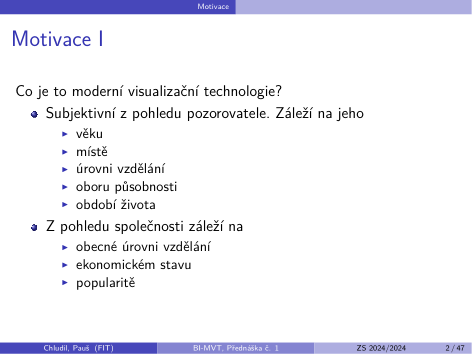
Jiří Chludil, Petr Pauš · ZS 2024/2025 · PDF, strana 2
Motivace II
Moderní visualizační technologie z pohledu přednášejícího (věk 14 let)
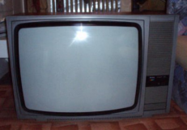
Ilustrace z původního podkladu, strana 3, obrázek 1
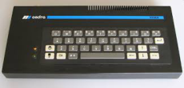
Ilustrace z původního podkladu, strana 3, obrázek 2
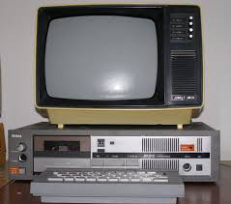
Ilustrace z původního podkladu, strana 3, obrázek 3
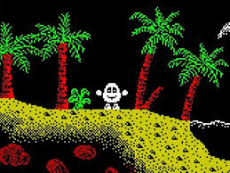
Ilustrace z původního podkladu, strana 3, obrázek 4
Původní snímek · 3
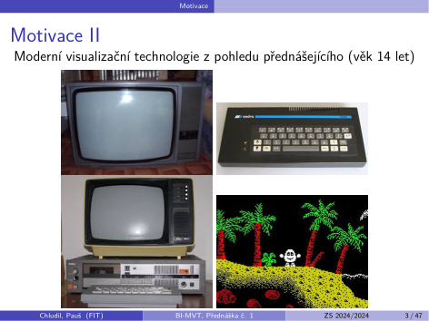
Jiří Chludil, Petr Pauš · ZS 2024/2025 · PDF, strana 3
Motivace III
Moderní visualizační technologie z pohledu přednášejícího (věk 20 let)
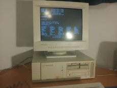
Ilustrace z původního podkladu, strana 4, obrázek 1
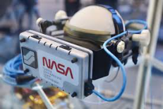
Ilustrace z původního podkladu, strana 4, obrázek 2
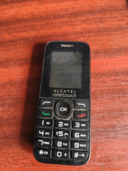
Ilustrace z původního podkladu, strana 4, obrázek 3Ilustrace z původního podkladu, strana 4, obrázek 4
Původní snímek · 4
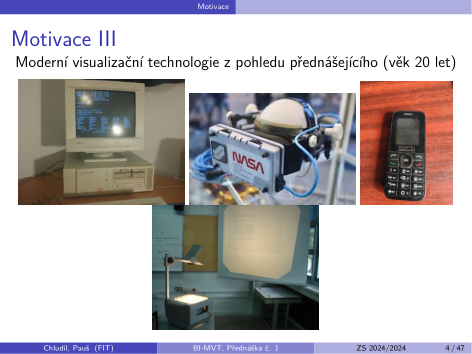
Jiří Chludil, Petr Pauš · ZS 2024/2025 · PDF, strana 4
Motivace IV
Součastnost
1 Získat základní předhled o vizualizačních technologiích
▶Virtuální realita (VR) ▶Rozšířená realita (AR) ▶Vizualizace 2D a 3D dat v prostředí WWW ▶Zařízení s velkým rozlišením ▶Vizualizace vědeckých dat ▶VideoMapping a vizualizace na budovách
2 Dostat dostatek podkladů pro svoje směřování v zaměření počítačová grafika.
▶Výběr předmětů v tzv. výhybkách ▶Volba volitelných předmětů ▶Volba tématu bakalářské práce
Původní snímek · 5
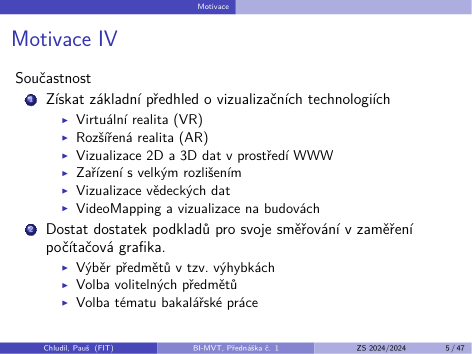
Jiří Chludil, Petr Pauš · ZS 2024/2025 · PDF, strana 5
Motivace V
Podklad 2024/2025: dobová organizace / autorský historický příklad. Aktuální pravidla ověřte na Courses; historická data zde nejsou nově ověřovaná.
1 Vyhýbky
▶Týmový projekt 2 (BI-SP2) vs. Virtuální herní světy (BI-VHS) ▶(Stááále plánováno) Strojové vidění a zpracování obrazu
(BI-SVZ) vs. Blender (BI-BLE) vs. Virtuální realita I (BI-VR1)
2 Volba volitelných předmětů
▶Blender (BI-BLE) ▶Virtuální realita I (BI-VR1) ▶Týmový projekt 1 (BI-SP1) ▶(Plánováno) Unity 3D (BI-U3D)
Původní snímek · 6
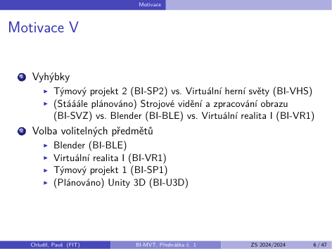
Jiří Chludil, Petr Pauš · ZS 2024/2025 · PDF, strana 6
Motivace VI
Autoři tohoto předmětu
JCH & PP
Studenti 0. běhu, 1. běhu, 2. běhu
Podobně vznikly BI-PGA
Původní snímek · 7
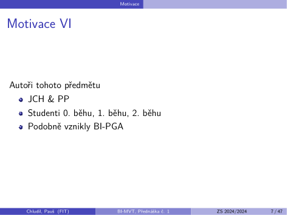
Jiří Chludil, Petr Pauš · ZS 2024/2025 · PDF, strana 7
Obsah přednášek
1 Přehled vybraných vizualizačních technologií
2 a něco i navíc.
▶Fraktály ▶Displeje
Původní snímek · 8
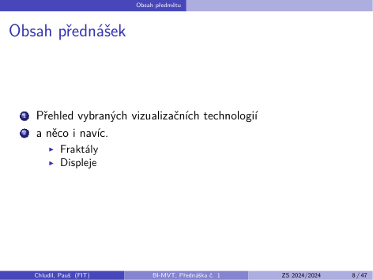
Jiří Chludil, Petr Pauš · ZS 2024/2025 · PDF, strana 8
Obsah cvičení
Prakticky se naučit
Jak navrhnout a možná i implementovat aplikace pro vybrané vizualizační technologie
Původní snímek · 9
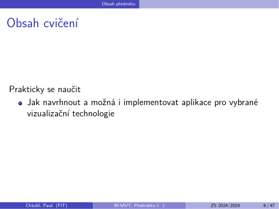
Jiří Chludil, Petr Pauš · ZS 2024/2025 · PDF, strana 9
Sylabus
Podklad 2024/2025: dobová organizace / autorský historický příklad. Aktuální pravidla ověřte na Courses; historická data zde nejsou nově ověřovaná.
1 Úvod do vizualizace.
2 Virtuální realita (VR).
3 Rozšířená realita (AR)
4 Programování VR a AR
5 Moderní vizualizační technologie (minulost, současnost a budoucnost).
6 Zobrazování fraktálů
7 Vizualizace ve WWW
8 Vizualizace vědeckých dat
9 Uživatelské rozhraní
10 VideoMapping a vizualizace na budovách. 11 Vysoké rozlišení + 3D digitalizace
Podklad 2024/2025: dobová organizace / autorský historický příklad. Aktuální pravidla ověřte na Courses; historická data zde nejsou nově ověřovaná.
Semestrální úlohy
▶0-N Virtuální realita (VR) ▶0-N Rozšířená realita (AR) ▶0-N Vizualizace 2D a 3D dat v prostředí WWW ▶0-N Zařízení s velkým rozlišením ▶0-N Vizualizace vědeckých dat ▶0-N VideoMapping a vizualizace na budovách ▶Vypracovat minimálně 2 práce ze dvou různých témat ▶Úlohy mají různá bodové hodnocení dle obtížnosti, max. 70 b.
Prezentace úloh v SAGELab (cca 12. cvičení)
▶použité algortimy, návrhy, způsob řešení ▶maximálně 10 bodů
Udělení zápočtu je podmíněno splněním 2 podmínek:
▶získáním minimálně 35 bodů ze semestrálních úloh ▶získáním minimálně 5 bodů z prezentace ▶získáním minimálně 40 bodů celkově.
Vizualizací se rozumí zobrazování skutečnosti, jejichž výsledky jsou znázorněny vnímané prostřednictvím zrakových receptorů. (wikipedie).
Definice
Způsob zobrazení dané informace pomocí některé z grafických reprezentací.
Definice
The use of computer-generated, interactive, visual representations of data to amplify cognition. (Card, Mackinlay, Shneiderman, 1999).
Definice
Tool to enable a User insight into Data
Ilustrace z původního podkladu, strana 14, obrázek 3Ilustrace z původního podkladu, strana 14, obrázek 9Ilustrace z původního podkladu, strana 14, obrázek 15Ilustrace z původního podkladu, strana 14, obrázek 21
Podklad 2024/2025: dobová organizace / autorský historický příklad. Aktuální pravidla ověřte na Courses; historická data zde nejsou nově ověřovaná.
The Jetsons (1962)
Samsung (1999-)
Ilustrace z původního podkladu, strana 45, obrázek 1Ilustrace z původního podkladu, strana 45, obrázek 2Ilustrace z původního podkladu, strana 45, obrázek 3